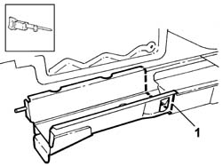
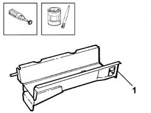
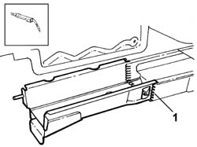

7210B61 PARTIAL BOOT FLOOR SIDE MEMBER
- Path
- Procedures > 72 panels and frames > 7210 REMOVING REFITTING > 7210B STRUCTURAL ELEMENTS (CENTRE AND REAR section) > 7210B61 PARTIAL BOOT FLOOR SIDE MEMBER
- Kind
- repair procedure (removal / refitting; the operation number is the code)
- Applies to
- all engines; all production periods
- Interactive page
- https://sloeber94.github.io/elrnDB-lThss/en/#/501049
Applies to: all engines; all production periods
Applies to: all engines; all production periods
 Removing
Removing
 Refitting
Refitting- Check whether the components connected are distorted through the bodyshell alignment measurements using suitable test equipment (test benches, templates or jigs).
- Carry out any bodyshell straightening operations before cutting the component.
1. Make the cuts shown in the diagram using a power saw.

Applies to: all engines; all production periods
Refitting
Removing- Grind the surface of the bodyshell affected by the cutting and apply electro-galvanizing paint.
1. Remove the anti-corrosion treatment from the edge of the replacement part in contact with the bodyshell using a rotary brush and apply electro-galvanizing paint.

Applies to: all engines; all production periods
- Position the replacement part and fasten it using self-locking clamps.
1. Seam weld in the cutting area shown in the diagram.

Applies to: all engines; all production periods
- Check that the welded component is correctly positioned.
- Level the weld area using a disc grinder.
- Apply electro-galvanzing paint to the ground parts.